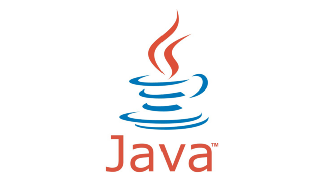
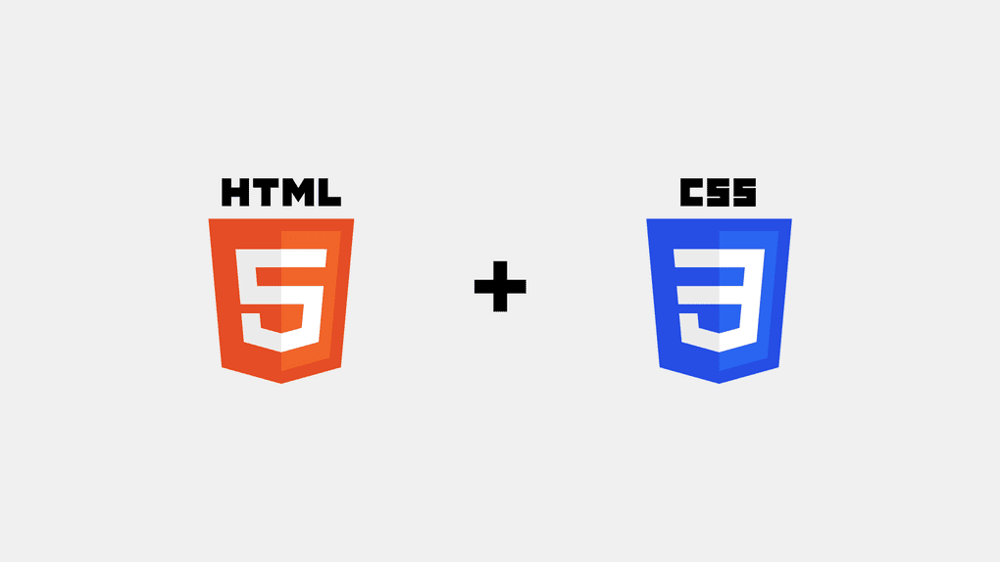
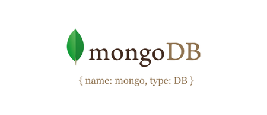

Tecnologías
Python

Python es un lenguaje de programación interpretado cuya filosofía hace hincapié en la legibilidad
de su código. Se trata de un lenguaje de programación multiparadigma,
ya que soporta orientación a objetos, programación imperativa y, en menor medida, programación funcional.
Es un lenguaje interpretado, dinámico y multiplataforma.
Una de las ventajas principales de aprender Python es la posibilidad de crear un código con gran legibilidad,
que ahorra tiempo y recursos, lo que facilita su comprensión e implementación.
Estos factores y otros que veremos más adelante, han hecho que Python se convierta en uno de los idiomas de programación más utilizados.
Desde aplicaciones web hasta la inteligencia artificial, los usos de Python son infinitos.
A continuación están enumeradas sus usos más importantes:
- Inteligencia Artificial.
- Big Data.
- Data Science.
- Desarrollo Web.
Java
Java es un lenguaje de programación y una plataforma informática comercializada por primera vez en 1995 por Sun Microsystems. Java sirve para crear aplicaciones y procesos en una gran diversidad de dispositivos. Se basa en programación orientada a objetivos, permite ejecutar un mismo programa en diversos sistemas operativos y ejecutar el código en sistemas remotos de manera segura. Su ámbito de aplicación es tan amplio que Java se utiliza tanto en móviles como en electrodomésticos. Muchos programadores también utilizan este lenguaje para crear pequeñas aplicaciones que se insertan en el código HTML de una página para que pueda ser ejecutada desde un navegador.
React

React (también llamada React.js o ReactJS) es una biblioteca Javascript de código abierto diseñada para crear interfaces de usuario con el objetivo de facilitar el desarrollo de aplicaciones en una sola página. Es mantenido por Facebook y la comunidad de software libre. Han participado en el proyecto más de mil desarrolladores diferentes. React intenta ayudar a los desarrolladores a construir aplicaciones que usan datos que cambian todo el tiempo. Su objetivo es ser sencillo, declarativo y fácil de combinar. React sólo maneja la interfaz de usuario en una aplicación; React es la Vista en un contexto en el que se use el patrón MVC (Modelo-Vista-Controlador) o MVVM (Modelo-vista-modelo de vista). También puede ser utilizado con las extensiones de React-based que se encargan de las partes no-UI (que no forman parte de la interfaz de usuario) de una aplicación web.
HTML y CSS
HTML, siglas en inglés de HyperText Markup Language (‘lenguaje de marcas de hipertexto’), hace referencia al lenguaje de marcado para la elaboración de páginas web. Es un estándar que sirve de referencia del software que conecta con la elaboración de páginas web en sus diferentes versiones, define una estructura básica y un código (denominado código HTML) para la definición de contenido de una página web, como texto, imágenes, videos, juegos, entre otros. HTML es un lenguaje de marcado que nos permite indicar la estructura de nuestro documento mediante etiquetas. Este lenguaje nos ofrece una gran adaptabilidad, una estructuración lógica y es fácil de interpretar tanto por humanos como por máquinas.
CSS (siglas en inglés de Cascading Style Sheets), en español «Hojas de estilo en cascada», es un lenguaje de diseño gráfico para definir y crear la presentación de un documento estructurado escrito en un lenguaje de marcado. Es muy usado para establecer el diseño visual de los documentos web, e interfaces de usuario escritas en HTML o XHTML; el lenguaje puede ser aplicado a cualquier documento XML, incluyendo XHTML, SVG, XUL, RSS, etcétera. Te puede ayudar a crear tu propio sitio web. Junto con HTML y JavaScript, CSS es una tecnología usada por muchos sitios web para crear páginas visualmente atractivas, interfaces de usuario para aplicaciones web y GUIs para muchas aplicaciones móviles
MongoDB
MongoDB es un sistema de base de datos NoSQL, orientado a documentos y de código abierto. En lugar de guardar los datos en tablas, tal y como se hace en las bases de datos relacionales, MongoDB guarda estructuras de datos BSON (una especificación similar a JSON) con un esquema dinámico, haciendo que la integración de los datos en ciertas aplicaciones sea más fácil y rápida. MongoDB es una base de datos adecuada para su uso en producción y con múltiples funcionalidades. Esta base de datos se utiliza mucho en la industria,1 contando con implantaciones en empresas como MTV Network,2 Craiglist,3 Foursquare.